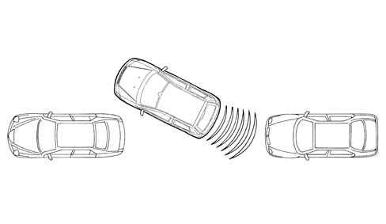
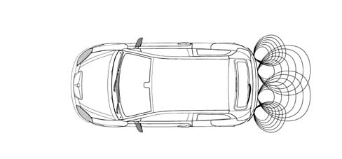
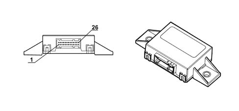
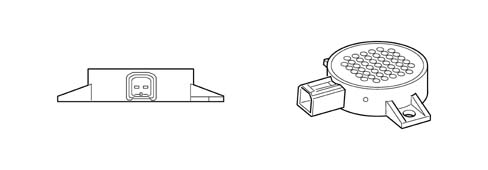

5580H parking obstacle detection device
- Path
- Descriptions > 55 ELECTRICAL EQUIPMENT > 5580 SPECIAL ACCESSORIES > 5580H parking obstacle detection device
- Kind
- system description
- Applies to
- all engines; all production periods
- Interactive page
- https://sloeber94.github.io/elrnDB-lYpsln/en/#/2427451
Applies to: all engines; all production periods
The parking sensors provide the driver with information relating to distance when approaching obstacles either in front of or behind the vehicle. This aids parking manoeuvres by identifying obstacles outside the driver's field of view.
The information that there is an obstacle and its distance is transmitted to the driver by means of acoustic signals whose frequency depends on the distance from the obstacle.

Applies to: all engines; all production periods
The parking assistance system on the vehicle comprises the following components:
- an electronic control unit;
- 4 ultrasound sensors;
- 1 buzzer
Applies to: all engines; all production periods
PARKING SENSOR CONTROL UNIT (CPA)
The CPA is an electronic component connected to the rear wiring which carries out functions helping the driver during manoeuvres with reverse gear engaged by detecting any obstacles behind the vehicle. There are interfaces on the CPA for the sensors on the rear bumpers, the trailer control unit and a speaker in the rear part of the vehicle.
The control unit has the following connections:
- trailer presence;
- igntion-operated supply
- connections with rear sensors;
- Diagnostic line K
Applies to: all engines; all production periods
SENSORS
The sensors are incorporated in the bumper by means of special adaptors. The flow of ultrasound waves produced/received by the sensors must not be obstructed therefore:
The system covers the middle and side areas of the rear of the vehicle with the performance depending on the programmable detection area. If an obstacle is located in the middle area, it is detected at a distance of between a minimum of 120 cm ± 10 cm and a maximum of 150 cm ± 10 cm along the entire width of the vehicle (door mirrors excluded).
If the obstacle is loated in the side area, it is detected at a distance of less than 0.6 m.
The rear sensors operate in the following conditions:
- key ON;
- reverse gear engaged.

Applies to: all engines; all production periods
SENSORS
SETTINGS
Applies to: all engines; all production periods
ELECTRONIC CONTROL UNIT
The electronic control unit performs the following functions:
- Activating the sensors
- Processing the signals received from the sensors
- Checking the operation of the sensors
- Activating the buzzer
- Managing the diagnostics and test functions
The electronic control unit has a device that provides protection against voltage fluctuations and short circuits

Applies to: all engines; all production periods
ELECTRONIC CONTROL UNIT
Parking control unit.
Applies to: all engines; all production periods
CONTROL UNIT PINOUT:
Pin | Signal |
|---|---|
relay | Left rear exterior sensor signal |
relay | Left rear interior sensor signal |
3 | Right rear interior sensor signal |
4 | Right rear exterior sensor signal |
5 | Sensor positive |
6 | Sensor earth |
7 | n.c. |
8 | n.c. |
9 | n.c. |
10 | n.c. |
11. | n.c. |
12. | Earth |
13 | Reversing signal |
14 | Activation/Deactivation of system with tow hook (1) fitted |
15 | n.c. |
16 | n.c. |
17 | n.c. |
18 | n.c. |
19 | n.c. |
20 | Diagnostic line K |
21 | n.c. |
22 | Buzzer signal (-) |
23 | Buzzer (+) |
24 | n.c. |
25 | n.c. |
26 | n.c. |
Applies to: all engines; all production periods
ULTRASOUND SENSORS
The sensors are ultrasoud transducers working like intelligent transmitters and receivers of ultrasound impulses. Both the impulse frequency and voltage is generated in the transducer.
The impulses emitted are reflected by any obstacles; the transducer therefore receives an echo which is amplified and converted into a digital signal and sent to the electronic control unit via the same line used for the transmission request.
Each sensor can also be operated as a receiver only, in oder to carry out a triangular measurement between two sensors. This technique allows for improved detection of small obstacles and in situations featuring critical reflections.
The sensors all have the same electrical and mechanical properties: the maximum detection distance for each sensor can be adapted using software depending on the location of the actual sensor.
Applies to: all engines; all production periods
SENSOR PINOUT
Pin | Signal |
|---|---|
relay | Sensor signal |
relay | Earth |
3 | Sensor supply voltage |
Applies to: all engines; all production periods
ACOUSTIC SIGNALLER
The acoustic signaller (buzzer) communicates information concerning distance, the activation of the system and any fault. The buzzer is located inside the passenger compartment.
The frequency and the volume can be controlled by the control unit.

Applies to: all engines; all production periods
MEASURING THE DISTANCE OF OBSTACLES
The electronic control unit determines the measurement timing; it operates the senors which convert the control unit electrical signals into ultrasound impulse trains, with a cadence that varies from 3 to 10 measuring processes per second.
The signal, reflected by any obstacles, is received by the sensor and amplified, converted into a digital signal and sent, in this format, to the electronic control unit.
The control unit compares the signal emitted with the one received and, using suitable algorithms, calculates the time that elapses between the emission of the signal and the receipt of the echo. This information is translated into distance and communicated to the driver by means of acoustic warnings.
The reflection from the ground is ignored unless it has the properties of an obstacle.
Applies to: all engines; all production periods
SELF-DIAGNOSIS
The control unit carries out an autodiagnostic test when it is switched on. The sensors are diagnosed each time they are activated.
Applies to: all engines; all production periods
RECOVERY STRATEGIES
The sensors and the wiring are continuously diagnosed during the operation of the system. A fault in even only one sensor will inhibit the operation of the entire system.
Applies to: all engines; all production periods
ACTIVATION AND DEACTIVATION OF THE SYSTEM
When the control unit is switched on (key-on and reverse gear engaged), an autodiagnostic test and a test on all the surrounding components is carried out. The system is ready to use in less than 0.5 seconds.
The distance measurements only take place when the system is activated.
The system is activated when the following two conditions occur:
- Key ON
- Reverse gear engaged
When the system is activated the buzzer gives off a signal
If obstacles are present, it emits the obstacle distance signals whose frequency increase as the obstacle gets closer.
If a fault occurs, the system emits a warning signal.
Applies to: all engines; all production periods
SYSTEM ACTIVATION SIGNAL
When the system is activated, there is a warning signal.
Applies to: all engines; all production periods
OBSTACLE DISTANCE SIGNAL
The control unit processes the information supplied by the 4 sensors, operating the buzzer to signal the presence of any obstacles.
The buzzer warns the driver that the vehicle is approaching an obstacle. The tone lasts 75 ms, whilst the interval between the tones is directly proportional to the distance of the obstacle: impulses in rapid succession indicate that the obstacle is very close. A continuous tone indicates that the obstacle is less than 30 cm away.
The tone cycle remains constant if the distance measured by the centre sensors remains unchanged.
Applies to: all engines; all production periods
ERROR SIGNAL
Any faults/errors are signalled acoustically.
The acoustic signalling stops after 3 seconds.
Errors/faults are signalled immediately whilst the system is activated.